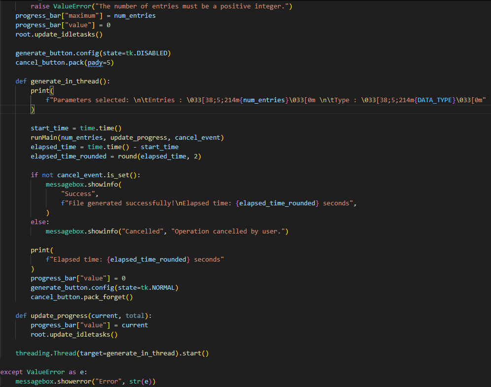

Réaliser un développement d'application
Compétence 1
Détails de la compétence :
Cette compétence se décompose en plusieurs apprentissages critiques (AC) que j'ai pu développer à travers mes projets :
- AC 1 : Élaborer et implémenter les spécifications fonctionnelles et non fonctionnelles à partir des exigences.
- AC 2 : Appliquer des principes d'accessibilité et d'ergonomie.
- AC 3 : Adopter de bonnes pratiques de conception et de programmation.
- AC 4 : Vérifier et valider la qualité de l'application par les tests.
Présentation
Cette trace illustre l'architecture des installeurs développés avec Inno Setup, leurs relations et la manière dont ils sont organisés. Les installateurs de Federation et de Identity Provisionning sont indépendants et les désinstallateurs également.
Savoirs mobilisés :
- La capacité à analyser des systèmes existants et à traduire les besoins des clients en spécifications fonctionnelles et non fonctionnelles (telles que la modularité, la robustesse, l'ergonomie, et l'intégration continue)
- La conception d'interfaces utilisateur (UI) qui respectent les principes d'ergonomie et de clarté est essentielle pour améliorer l'expérience utilisateur et l'efficacité des applications, notamment par l'intégration de champs préremplis et de listes dynamiques.
- L'adoption de bonnes pratiques, incluant la modularité, la gestion rigoureuse des erreurs, des divers cas d'usages (architecture, installations et configurations actuelles, composants, etc.) la journalisation exhaustive et la sécurisation des données sensibles.
- La vérification et la validation par des tests (fonctionnels, d'acceptation, de prérequis, de données) sont des étapes indispensables pour garantir la qualité, la conformité et la sécurité d'une application avant son déploiement.
Savoir-faire mis en œuvre :
- J'ai mené une analyse approfondie des logiciels existants (Identity, Federation, Identity Provisioning) pour comprendre leur architecture et leur fonctionnement, ce qui m'a permis d'identifier les exigences de refonte. J'ai ensuite formalisé les besoins, en tenant compte des exigences initiales (alternative gratuite, open source, riche en fonctionnalités, intégrable continuellement, éxécutable silencieusement) et en gérant l'évolution de ces besoins (passage d'un installateur simple à une version permettant la sélection individuelle des produits et la récupération dynamique d'informations via des requêtes vers l'Identity Provider (IdP)). J'ai implémenté un installateur qui répond à ces spécifications, en étant modulaire et robuste.
- J'ai conçu des interfaces claires et concises pour l'installateur afin d'optimiser son ergonomie. J'ai intégré des fonctionnalités telles que des champs préremplis et des listes dynamiquement alimentées (par exemple, avec les certificats disponibles et les magasins de certificats de la machine courante), facilitant ainsi l'interaction et réduisant les erreurs pour l'utilisateur final.
- J'ai développé l'installateur en appliquant des principes de conception modulaires et
robustes, en utilisant notamment PowerShell pour la logique sous-jacente. J'ai mis en œuvre
des mécanismes de gestion des erreurs (blocs
try-catchet utilisation de codes de retour) et une journalisation complète du processus pour assurer sa fiabilité. J'ai également veillé à la sécurité des données, en assurant que les mots de passe soient stockés correctement et ne soient jamais affichés en clair. J'ai étudié les architectures des API (Application Programming Interface) REST (Representational State Transfer) et leur documentation grâce à l'utilisation de Swagger. - J'ai mis en œuvre une stratégie de tests rigoureuse pour valider la qualité de l'installateur. J'ai effectué de nombreux tests de prérequis (vérification de l'environnement .NET (Dot NET), de l'architecture, du module de réécriture d'URL (Uniform Resource Locator) d'IIS (Internet Information Services)) et des tests sur les données (tests des comptes de services via des requêtes vers l'AD (Active Directory), tests de connexion aux bases de données, etc.) pour renforcer la sécurité.
- Pour connaître le fonctionnement et l'architectures des diverses applications, j'ai d'abord
commencé par réaliser des tests d'acceptations, cela m'a permis d'apprendre à comprendre les
enjeux et l'importance de la validation logicielle au sein d'une équipe de développement.
J'ai appris à me servir de divers outils pour réaliser mes tests tel que l'utilisation de
l'observateur d'évènements, de la console et l'analyse réseau du navigateur ou encore des
logs générés par Hangfire
Optimiser des applications
Compétence 2
Détails de la compétence :
Cette compétence se décompose en plusieurs apprentissages critiques (AC) que j'ai pu développer à travers mes projets :
- AC 1 : Choisir des structures de données complexes adaptées au problème.
- AC 2 : Utiliser des techniques algorithmiques adaptées au problème.
- AC 3 : Comprendre les enjeux et moyens de sécurisation des données et du code.
- AC 4 : Évaluer l'impact environnemental et sociétal des solutions proposées.

Présentation
Cette trace illustre un extrait de code Python mettant en œuvre l'exécution à plusieurs fils (multithreading). Elle démontre une technique d'optimisation algorithmique où une tâche longue (comme la génération de données utilisateurs) est exécutée dans un fil d'exécution séparé, permettant ainsi à l'interface utilisateur de rester réactive.
Savoirs mobilisés :
- L'efficacité des traitements des données complexes dépend du choix judicieux de structures de données. L'utilisation de bibliothèques comme Pandas et ses Dataframes est une approche efficace pour organiser et manipuler de grands ensembles de données.
- L'optimisation des performances des applications, notamment pour les traitements à forte intensité de calcul, repose sur l'emploi de techniques telles que l'exécution à plusieurs fils pour la parallélisation des opérations.
- La sécurisation des données et du code est un enjeu majeur du développement logiciel, impliquant la protection des informations sensibles (par exemple, les mots de passe) et la mise en place de mesures préventives et de tests pour identifier les vulnérabilités.
- AC 4 non abordée.
Savoir-faire mis en œuvre :
- J'ai choisi et utilisé les Dataframes de la bibliothèque Pandas dans un programme Python car largement documenté, fiable et simple d'utilisation. Cette structure m'a permis d'organiser et de manipuler efficacement des jeux de données d'utilisateurs générés avec des attributs complexes et hétérogènes (rôles, période d'embauche, hiérarchie, organisations, métiers, etc.), avant de les exporter dans un format CSV (Comma Separated Values) pour une utilisation ultérieure avec le moteur de provisionnement.
- J'ai optimisé un programme Python dédié à la génération d'utilisateurs en y intégrant l'exécution à plusieurs fils d'exécution (multithreading). Cette technique m'a permis d'améliorer considérablement les performances, rendant possible la génération de centaines de milliers, voire de millions d'utilisateurs avec une grande efficacité.
- J'ai mis en œuvre des mesures pour garantir la sécurisation des données en veillant à ce que les mots de passe soient stockés de manière appropriée et ne soient jamais affichés en clair par le programme. J'ai également renforcé la sécurité des installateurs par l'exécution de nombreux tests de prérequis (environnements .NET (Dot NET), architectures, modules de réécriture d'URL (Uniform Resource Locator) d'IIS (Internet Information Services)) et des tests sur les données, tels que la vérification des comptes de services via des requêtes vers l'AD (Active Directory) et la validation des connexions aux bases de données.
- *Savoir-faire non mis en oeuvre*
Administrer des systèmes informatiques communicants complexes
Compétence 3
Détails de la compétence :
Cette compétence se décompose en plusieurs apprentissages critiques (AC) que j'ai pu développer à travers mes projets :
- AC 1 : Développer des applications communicantes.
- AC 2 : Utiliser la virtualisation.
- AC 3 : Sécuriser les services et données d'un système.
Présentation
Cette trace représente le flux de données entre l'installateur Identity et l'API (Application Programming Interface) du fournisseur d'identités. Les données transmises sont sous format JSON puis traitées à l'aide de scripts PowerShell et librairie dédiées.
Savoirs mobilisés :
- Le développement d'applications communicantes exige la compréhension des protocoles d'échange de données (comme le format JSON (JavaScript Object Notation)) et la capacité à interagir avec des services externes via des API (Application Programming Interface) pour des flux d'information complexes.
- L'utilisation de machines virtuelles (VMs) pour des environnements de développement, de test et de production sont utiles, notamment lorsqu'il faut créer de nombreuses machines afin d'avoir une maquette multi-machines réalistes avec une base de données décentralisée, un Active Directory ou encore un contrôlleur de domaine.
- La sécurisation des systèmes complexes implique une connaissance approfondie des environnements (AD (Active Directory), IIS (Internet Information Services)), des mécanismes de gestion des certificats, du réseau, et de l'analyse des journaux (logs) pour le diagnostic et la détection d'incidents.
Savoir-faire mis en œuvre :
- J'ai développé une fonctionnalité permettant à l'installateur d'envoyer des requêtes à un Identity Provider (IdP) pour récupérer dynamiquement des informations essentielles, telles que des jetons et des points de terminaison, au format JSON (JavaScript Object Notation). Cela démontre ma capacité à créer des applications interopérables et communicantes. J'ai également étudié en profondeur les architectures des API (Application Programming Interface) d'Identity REST (Representational State Transfer) et leur documentation via Swagger.
- J'ai acquis une bonne familiarisation avec l'utilisation des machines virtuelles (VMs) sous Windows Server, un environnement que j'ai utilisé pour le développement, les tests et la validation de l'installateur et des solutions logicielles, démontrant ainsi ma capacité à travailler dans des environnements virtualisés et de les faire fonctionner ensemble.
- J'ai acquis une familiarisation approfondie avec divers environnements Microsoft (AD (Active Directory), Azure, Teams, IIS (Internet Information Services), PowerShell, certificats, domaines, réseau, observateur d'événements). J'ai également appris à analyser des journaux (logs) Hangfire ou des journaux réseau avancés dans la console pour diagnostiquer et résoudre des problèmes. De plus, j'ai rédigé un article Confluence, documentant la création et l'utilisation de certificats auto-signés avec IIS (Internet Information Services), ce qui témoigne de ma capacité à mettre en œuvre et à documenter des pratiques de sécurisation.
Gérer des données de l'information
Compétence 4
Détails de la compétence :
Cette compétence se décompose en plusieurs apprentissages critiques (AC) que j'ai pu développer à travers mes projets :
- AC 1 : Optimiser les modèles de données de l'entreprise.
- AC 2 : Assurer la confidentialité des données (intégrité et sécurité).
- AC 3 : Organiser la restitution de données à travers la programmation et la visualisation.
- AC 4 : Manipuler des données hétérogènes.
Savoirs mobilisés :
- L'implémentation dans la base de données d'une fonction d'historisation des correctifs permettant d'assurrer une cohérence dans ces derniers.
- La garantie de la confidentialité, de l'intégrité et de la sécurité des données est un pilier de la gestion de l'information, exigeant des pratiques de stockage sécurisé des informations sensibles et des validations rigoureuses de leur exactitude.
- AC 3 non abordée.
- La manipulation et l'intégration de données provenant de sources et de formats divers (par exemple, des données générées, des données de systèmes externes, des fichiers CSV (Comma Separated Values)) sont des compétences essentielles pour la préparation et l'analyse de jeux de données complexes.
Savoir-faire mis en œuvre :
- J'ai mis en place une fonction d'historisation dans la base de données de l'application. En effet, il est important d'avoir cette fonctionnalité afin que l'installateur puisse appliquer les correctifs correctement (ne pas appliquer ceux antérieurs à la date du plus récent dans la base et dans l'ordre chronologique)
- J'ai mis en place des mesures garantissant la confidentialité des données en assurant que les mots de passe soient stockés de manière sécurisée et ne soient jamais affichés en clair par l'installateur. J'ai également réalisé des tests sur les données, comme la vérification des comptes de services via des requêtes vers l'AD (Active Directory) et les tests de connexion aux bases de données, afin de valider leur intégrité et leur sécurité.
- Savoir-faire non mis en œuvre.
- J'ai conçu et développé un programme en Python, utilisant la bibliothèque Faker, pour générer un grand nombre d'utilisateurs avec des attributs variés et cohérents (rôles, période d'embauche, hiérarchie, organisations, métiers). J'ai ensuite manipulé ces données hétérogènes en les structurant dans des Dataframes Pandas et en les exportant dans des fichiers CSV (Comma Separated Values), pour être utilisés par le moteur de provisionnement, démontrant ma capacité à préparer et à transformer des données pour des systèmes tiers.
Conduire un projet
Compétence 5
Détails de la compétence :
Cette compétence se décompose en plusieurs apprentissages critiques (AC) que j'ai pu développer à travers mes projets :
- AC 2 : Formaliser les besoins du client et de l'utilisateur.
- AC 3 : Identifier les critères de faisabilité d'un projet informatique.
- AC 4 : Définir et mettre en œuvre une démarche de suivi de projet.
Savoirs mobilisés :
- La formalisation des besoins des clients et des utilisateurs est une étape cruciale en gestion de projet, nécessitant une écoute active pour capter les exigences initiales et une adaptabilité pour gérer les évolutions.
- *Aucune information explicite n'est fournie concernant l'identification des critères de faisabilité d'un projet informatique.*
- Un suivi de projet efficace implique l'utilisation d'outils de gestion des tâches et des incidents, une communication transparente sur l'avancement et la capacité à estimer les charges de travail.
Savoir-faire mis en œuvre :
- J'ai formalisé les besoins de ma maîtresse d'apprentissage pour la refonte de l'outil d'installation, en prenant en compte les exigences de départ (choix d'une alternative gratuite et open source, fonctionnalités avancées, intégration continue) et en gérant les évolutions de ces exigences (passage d'un installateur simple à un installateur modulaire avec sélection individuelle des produits, implémentation de fonctionnalités liées aux correctifs ou à l'utilisation d'un fournisseur d'identité tiers).
- Lors des réunions quotidiennes (stand-ups), j'ai pu estimer les charges de travail des différentes tâches, contribuant ainsi à l'évaluation continue de la faisabilité du projet et à l'ajustement des tâches prévues.
- J'ai utilisé le système de tickets d'Azure DevOps (incluant la gestion des bogues (bugs), des récits utilisateurs (user story) et des fonctionnalités (features)) pour le suivi du projet, ce qui m'a permis de développer ma concision et ma précision dans la rédaction des tickets. J'ai également participé activement aux stand-ups quotidiens pour estimer les charges de travail et rendre compte de mon activité, contribuant ainsi à une démarche de suivi de projet structurée.
Collaborer au sein d'une équipe informatique
Compétence 6
Détails de la compétence :
Cette compétence se décompose en plusieurs apprentissages critiques (AC) que j'ai pu développer à travers mes projets :
- AC 2 : Appliquer une démarche pour intégrer une équipe informatique au sein d'une organisation.
- AC 3 : Mobiliser les compétences interpersonnelles pour intégrer une équipe informatique.
- AC 4 : Rendre compte de son activité professionnelle.
Savoirs mobilisés :
- L'intégration réussie au sein d'une équipe informatique repose sur la maîtrise des outils collaboratifs et des processus de développement partagés, essentiels pour une contribution efficace.
- Une collaboration efficace au sein d'une équipe est facilitée par des compétences interpersonnelles solides, telles que la communication proactive, la capacité à transmettre des connaissances et à travailler en synergie.
- La reddition de compte est essentielle pour la transparence et le suivi des projets au sein d'une équipe. Elle implique une communication claire, concise et régulière sur l'avancement des tâches et les résultats.
Savoir-faire mis en œuvre :
- J'ai appris et appliqué l'utilisation du système de demandes de tirage (pull request), un mécanisme clé de collaboration sur le code, ce qui m'a permis de m'intégrer et de contribuer efficacement aux processus de développement de l'équipe.
- J'ai activement communiqué avec les membres de mon équipe, notamment en transmettant les connaissances techniques acquises lors de mes périodes de tests à un collègue qui a intégré l'équipe de validation logicielle, démontrant ma capacité à partager l'information et à favoriser la montée en compétence collective.
- J'ai régulièrement rendu compte de mon activité professionnelle lors des stand-ups quotidiennes, incluant l'estimation des charges de travail. J'ai également contribué à la documentation interne en rédigeant un article Confluence destiné aux équipes, détaillant la création et l'utilisation de certificats auto-signés avec IIS (Internet Information Services), ce qui démontre ma capacité à documenter et à partager mes travaux. Ma capacité à être concis et précis dans la rédaction des tickets Azure DevOps (bogues, user story, fonctionnalités, etc.) a également amélioré la compréhension mutuelle au sein de l'équipe.